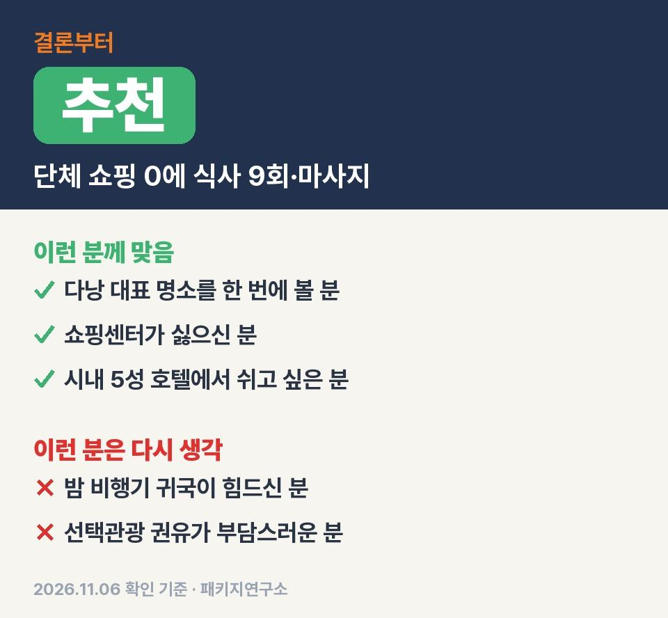
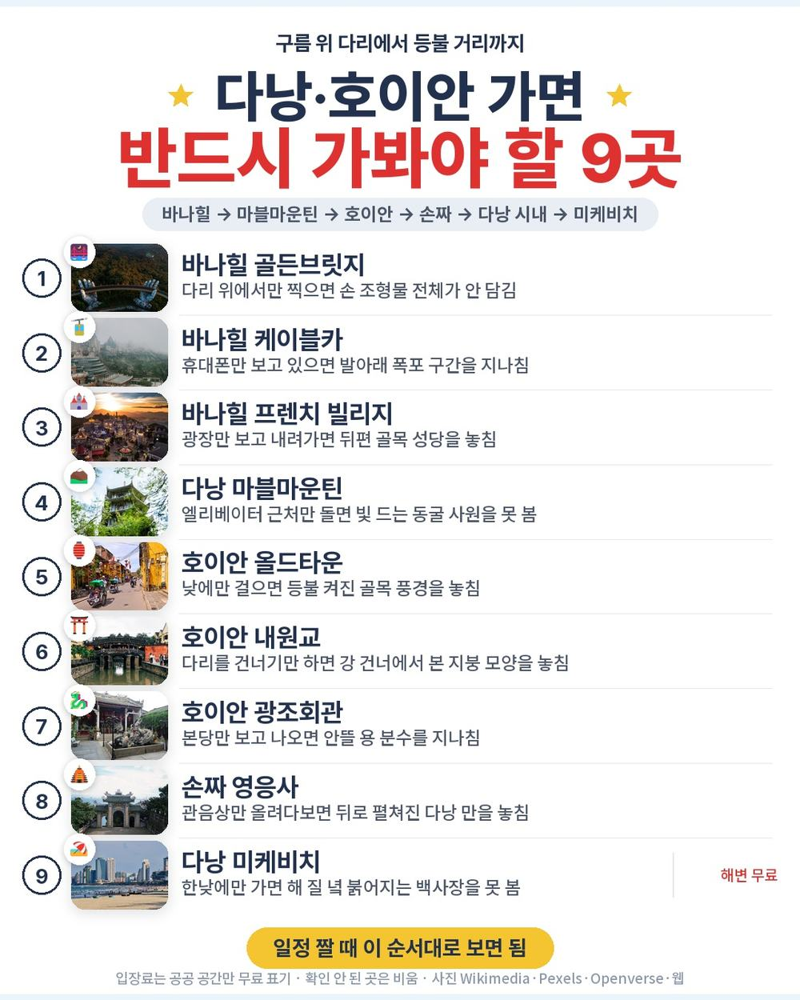
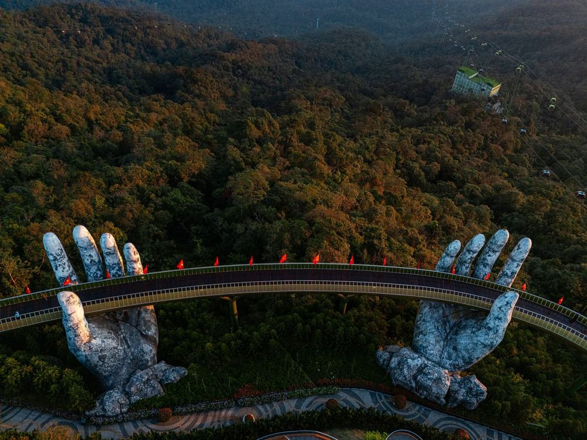
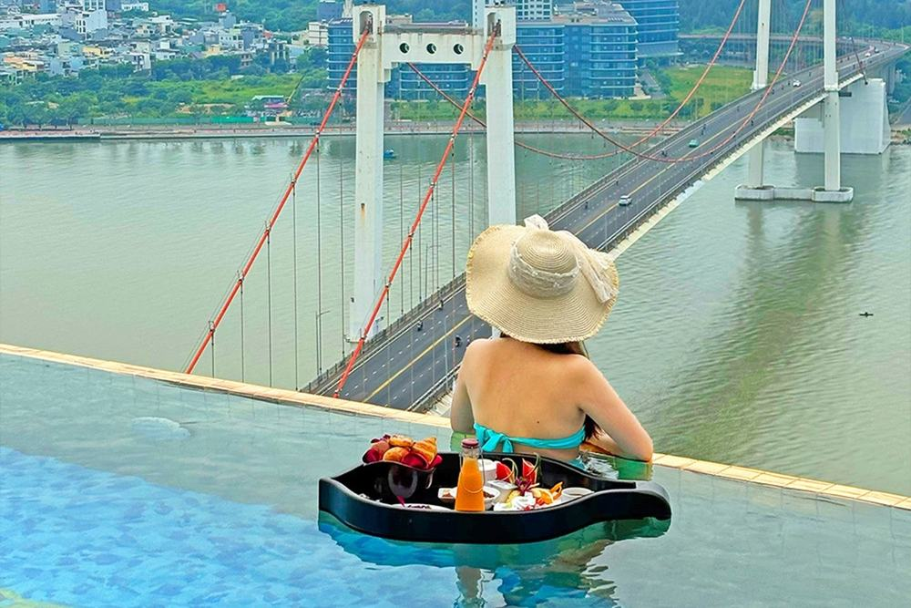
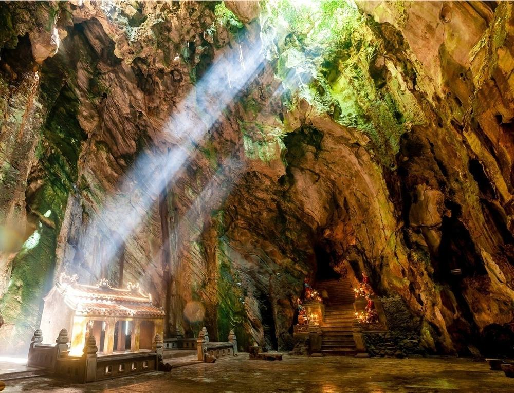
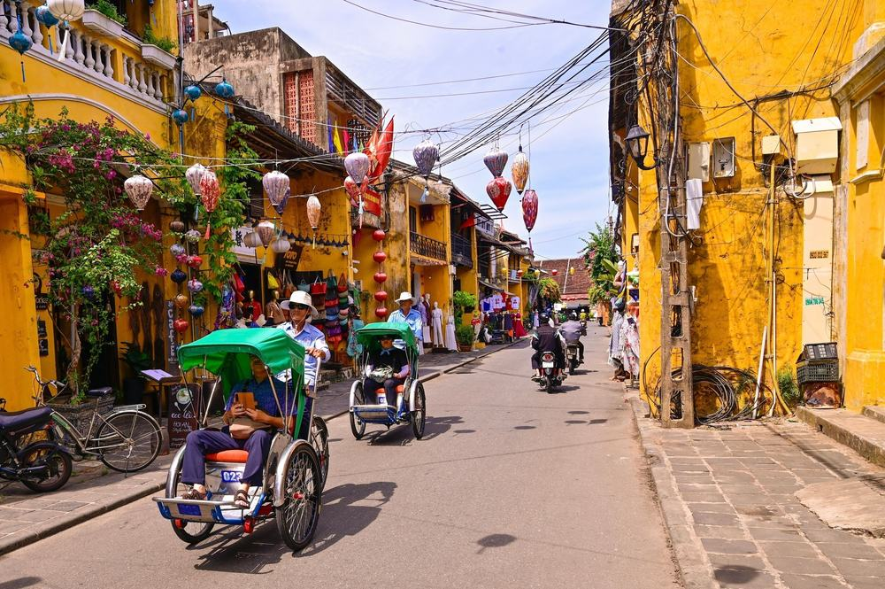
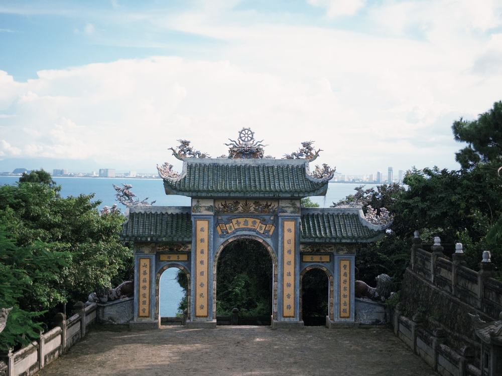

69만 9천원짜리 다낭 3박 5일인데 단체 쇼핑센터 방문이 한 번도 없음. 바나힐 점심 뷔페와 전신 마사지 60분까지 값 안에 들어 있음.
직접 다녀온 후기가 아니라, 하나투어 일정표와 포함·불포함 원문을 한 줄씩 대조해 따져 본 글임.
결론 — 추천. 시내 5성 호텔 3박, 식사 9회, 바나힐·마블마운틴·호이안·손짜까지 명소 13곳이 값 안에 있음. 다만 밤 11시 35분 귀국 비행기가 힘드신 분은 맞지 않음.

오늘 기준 출발일별 요금 보기
https://naver.me/x3cZxkEN

| 항목 | 내용 |
|---|---|
| 가격 | 1인 699,000원 (성인 · 1월 출발 기준) · 2인 1,398,000원 |
| 여행사 | 하나투어 |
| 항공 | 트리니티항공 직항 (TW011·TW012) · 인천 19:00 → 다낭 22:20 / 다낭 23:35 → 인천 06:05 |
| 숙소 | 윈덤 다낭 골든베이 3박 (시내 한강 옆 5성 · 슈페리어 2인 1실 · 루프탑 인피니티풀) |
| 일정 | 3박 5일 · 버스 · 한국어 가이드 · 식사 9회 · 단체 쇼핑센터 없음 · 선택관광 있음(필수 아님) |
▶ 내 출발일 오늘 기준 요금 확인 (제휴 링크 · 예약 시 수수료를 받으며 가격은 같습니다)
▶ 11월 6일 기준 다낭 패키지 최저 29만 9,900원부터 — 출발일별 값 한 화면에: 비교 페이지
| 번호 | 내용 | 한 줄 답 |
|---|---|---|
| 1 | 이 값에 들어 있는 것 | 명소 13곳 |
| 2 | 현장에서 더 낼 돈 | 2인 약 10만 8천원 |
| 3 | 일정과 체력 | 버스 약 5시간 |
| 4 | 자유여행으로 짜면 | 1인 약 67만 7천원 |
| 5 | 맞는 분 · 안 맞는 분 | 3 대 2 |

항공권부터 세면 인천–다낭 직항 왕복, 윈덤 다낭 골든베이 3박, 끼니 9번, 명소 13곳 입장, 버스, 한국어 가이드, 여행자보험.
여기에 전신 마사지 60분과 망고빙수(2인 1개)가 붙음.
끼니가 꽤 공들인 편임. 2일차 점심은 바나힐 산 위 포시즌스 뷔페, 저녁은 삼겹살 정식. 3일차는 월남쌈·쌀국수와 호이안 가정식. 4일차는 미케비치 씨푸드와 주꾸미·보쌈으로 마무리함.
도는 곳은 바나힐(케이블카·골든브릿지·프렌치 빌리지), 마블마운틴, 호이안 올드타운(내원교·풍흥의 집·턴키의 집·광조회관), 다낭 대성당, 한시장, 손짜 영응사, 미케비치. 바나힐 다녀온 사람들 글을 보면 케이블카 아래로 지나가는 숲과 폭포 얘기가 제일 많이 나옴.
다낭에서 이름난 곳은 거의 다 돌고 쇼핑센터에는 안 들르는 구성임.

| 항목 | 금액 | 필수/선택 | 비고 |
|---|---|---|---|
| 가이드·기사 경비 | 80달러 (약 10만 8천원) | 필수 | 1인 40달러 현지 지불 · 1달러 약 1,344원 |
| 선택관광 | 고른 만큼 | 선택 | 1개 10~100달러 · 안 하면 자유일정 |
| 기내식 | 사 먹은 만큼 | 해당 시 | 저가항공이라 기내식 유료 |
| 매너팁 | 자율 | 자율 | 안 내도 불이익 없다고 원문에 적힘 |
| 합계 (2인 필수분) | 약 10만 8천원 | 싱글룸 요금은 원문에 없음 |
꼭 나가는 돈은 가이드 경비 하나. 두 분 총액은 약 150만 6천원으로 잡으면 됨.
선택관광 목록이 길어서 처음 보면 놀랄 수 있음. 바구니배, 야경투어, 마사지 시간 늘리기 같은 것들이고 안 하면 그 시간은 자유일정으로 돌아감.
2인 기준 상품가에 약 10만 8천원만 얹으면 예산이 끝남.

| 일차 | 가는 곳 | 버스 | 걷기 | 점심 · 저녁 |
|---|---|---|---|---|
| DAY 1 | 인천 19:00 → 다낭 22:20 → 호텔 | 약 30분 | 적음 | 없음 (기내식 유료) |
| DAY 2 | 바나힐 케이블카 → 골든브릿지·프렌치 빌리지 → 테마파크 자유시간 → 시내 | 약 1시간 30분 | 보통 | 포시즌스 뷔페 · 삼겹살 정식 |
| DAY 3 | 오전 자유시간 → 마블마운틴 → 호이안 올드타운 → 다낭 | 약 1시간 30분 | 보통 | 월남쌈·쌀국수 · 호이안 가정식 |
| DAY 4 | 체크아웃 → 미케비치 → 영응사·대성당·한시장 → 공항 23:35 | 약 1시간 30분 | 보통 | 미케비치 씨푸드 · 주꾸미·보쌈 |
| DAY 5 | 인천 06:05 도착 | 거의 없음 | 적음 | 없음 |
버스는 닷새 합쳐 약 5시간. 바나힐은 시내에서 약 45분, 호이안은 마블마운틴에서 약 25분이라 한 번에 오래 타는 구간이 없음.
힘든 날은 4일차임. 아침에 체크아웃하고 밤 11시 35분 비행기까지 호텔 없이 도는 날이라, 갈아입을 옷을 작은 가방에 따로 챙기면 편함. 마블마운틴은 엘리베이터로 중턱까지 가지만 내려올 땐 돌계단을 걸음.
3일차 오전을 통째로 비워 둔 덕에 밤 비행기 전 체력을 아낄 틈이 있음.

| 항목 | 금액 | 근거 |
|---|---|---|
| 인천–다낭 왕복 항공 | 324,730원 | ICN↔DAD 직항 왕복 1인 · 앞으로 두 달 최저 운임(하위 25% 값이 튀어 최저가로) · 2026-11-04 마이리얼트립 조회 |
| 시내 5성급 호텔 3박 | 150,000원 | 2인 1실 1인분 (추정) |
| 식사 (점심·저녁 6회) | 60,000원 | 현지 식당 (추정) |
| 바나힐 입장·케이블카 | 60,000원 | 1인 (추정) |
| 전신 마사지 60분 | 26,900원 | 이 상품 선택관광 「베트남 전통 마사지 60분」 20달러 |
| 공항 이동·근교 그랩 | 40,000원 | 공항·호이안·마블마운틴 2인 나눠 1인분 (추정) |
| 여행자보험 · 유심 | 15,000원 | 5일 기준 (추정) |
| 가이드 | — | 자유여행은 없음 |
| 합계 | 약 676,630원 |
직접 짜면 1인 약 67만 7천원, 패키지는 69만 9천원. 패키지 쪽이 2만원 남짓 더 듦. 가이드 경비 40달러까지 넣으면 차이는 7만원대로 벌어짐.
항공 값은 가장 싼 날 기준이라 자유여행에 유리하게 잡은 숫자임. 1월 출발일 값으로 다시 보면 차이가 줄 수도 있음.
그 7만원대로 사는 건 이동 걱정을 덜어 내는 일임. 바나힐 케이블카 줄, 호이안 왕복, 마블마운틴 입장을 혼자 챙기려면 그랩을 몇 번씩 불러야 함.
이동과 예약을 다 맡기는 값이 1인 7만원대라고 보면 계산이 맞음.

| 맞는 분 | 안 맞는 분 |
|---|---|
| 다낭 대표 명소를 한 번에 볼 분 | 밤 비행기 귀국이 힘드신 분 |
| 쇼핑센터가 싫으신 분 | 선택관광 권유가 부담스러운 분 |
| 시내 5성 호텔에서 쉬고 싶은 분 |
같은 장소 후기들을 모아 보면 호이안은 해가 지고 골목 등불이 켜질 때가 제일 좋았다는 말이 많음. 2만 동 지폐 그림이 내원교라 그 지폐를 들고 다리 앞에서 찍는 게 요령으로 자주 나옴.
안 맞는 쪽에도 받쳐 주는 게 있음. 귀국이 밤이지만 3일차 오전이 자유시간이고 선택관광은 안 해도 자유일정으로 돌아감. 네 분이 같이 예약하면 객실이 있을 때 방 두 개 대신 2베드룸 코너 스위트 하나로 바꿔 준다는 안내도 있음(안내 전화 때 요청).
밤 귀국 하나만 괜찮으면 값에 든 내용은 빈 데가 없음.
Q. 다낭 패키지 쇼핑센터 가는 일정이 있나요?
A. 이 상품은 없음. 단체 쇼핑센터 방문 없이 돌고 한시장은 시내 관광 중 들르는 재래시장임.
Q. 다낭 패키지 가이드 팁은 얼마인가요?
A. 가이드·기사 경비 1인 40달러(아동 30달러)를 현지에서 냄. 매너팁은 자율이라 안 내도 불이익 없음.
Q. 다낭 패키지 가격에 마사지도 들어 있나요?
A. 들어 있음. 전신 마사지 60분이 포함이고 90분·120분으로 늘리는 건 선택관광으로 따로 냄.
시내 5성 호텔에 묵으면서 바나힐, 호이안, 마블마운틴, 손짜를 쇼핑센터 없이 도는 3박 5일.
밤 비행기 귀국이 괜찮은 분이면 끼니와 마사지까지 챙긴 구성이라 손해 볼 데가 적음.
출발일마다 값이 달라서 가시려는 날짜 요금부터 확인하시면 됨.
오늘 기준 출발일별 요금 보기
https://naver.me/x3cZxkEN
이 글에는 네이버 제휴 링크가 포함되어 있으며, 링크를 통해 예약하시면 일정 수수료를 받습니다. 가격은 동일합니다. 가격과 구성은 2026년 11월 5일 확인 기준이며 출발일에 따라 달라질 수 있습니다.
▶ 이 상품, 영상으로 보기 (유튜브)
▶ 다낭 패키지 오늘 값 나란히 비교
▶ 같은 목적지 다른 여행사 패키지, 쇼핑·선택관광·가이드 경비까지 비교: pkg-lab.com